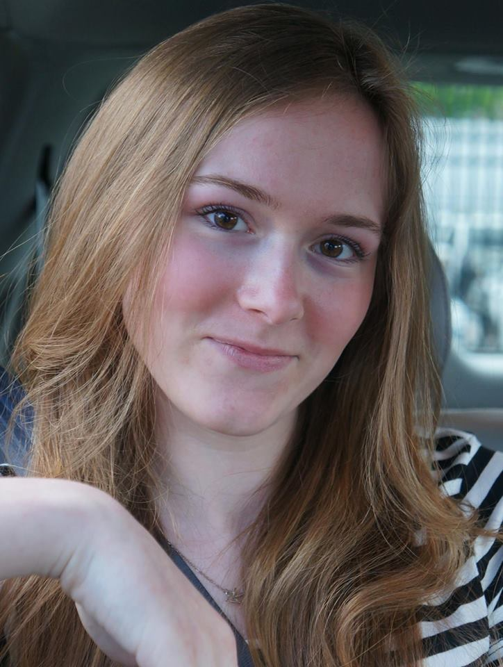

Gabrielle McCormack- A collection of my web work and photography

"If it's a good idea, go ahead and do it. It's much easier to apologize than it is to get permission." -Grace Hopper
| Home | About Me | My Projects | Gallery |
About Me
My name is Gabrielle and I live in beautiful and scenic New Jersey in a town that is graced with majestic wildlife and rolling hills. I live in a modest home surrounded by dense forest with my parents and grandmother. In my free time, I love to code, paint, take photos, bird watch, and invent. I am a part of many clubs at my school including Robotics, Mural Club, the Yearbook Committee, the Technology Club, and participate in school musicals. I am also an award recipient of the 2014 NCWIT Aspirations in Computing National Award and New Jersey Affiliate Award.
Some of my hobbies include gardening, painting, birdwatching, and building websites. I also love creating PowerPoint presentations for my family. Under the My Projects tab is the presentation that I made for my father's retirement party. I also love photography and take photos very often of anything I find interesting. I especially love to take photos of the birds that I see in my backyard, many of which are uncommon species to see. If you would like to see any of my photos, feel free to follow the Photography tab to my photos. As far as coding, over the past two years I have learned to code in over 6 different lanuages including html, css, Javascript, Java, C++, C#, Objective-C, and Python.